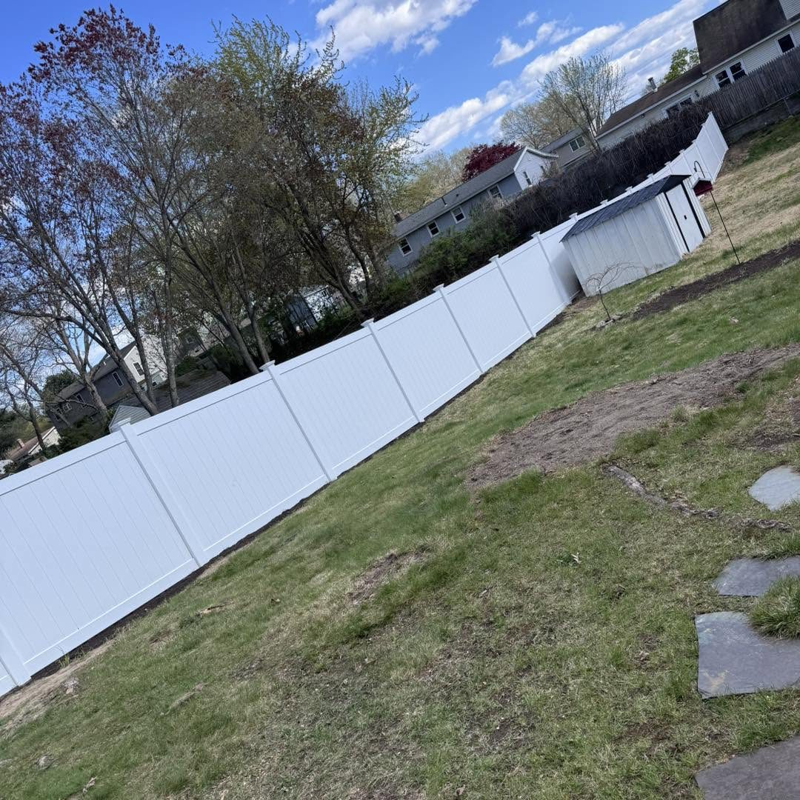
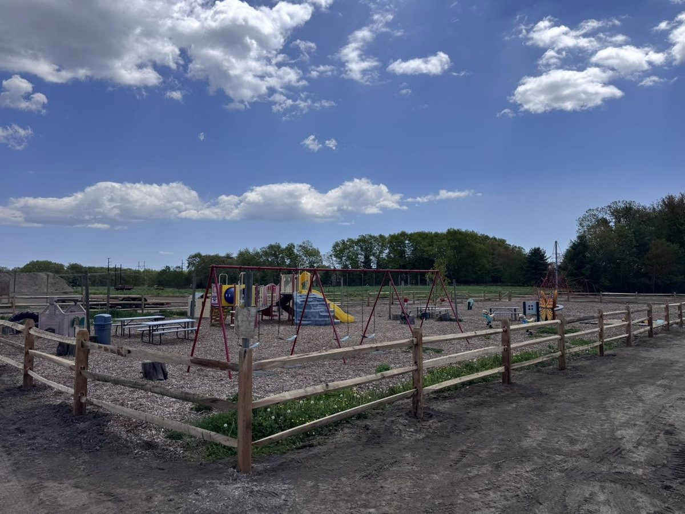
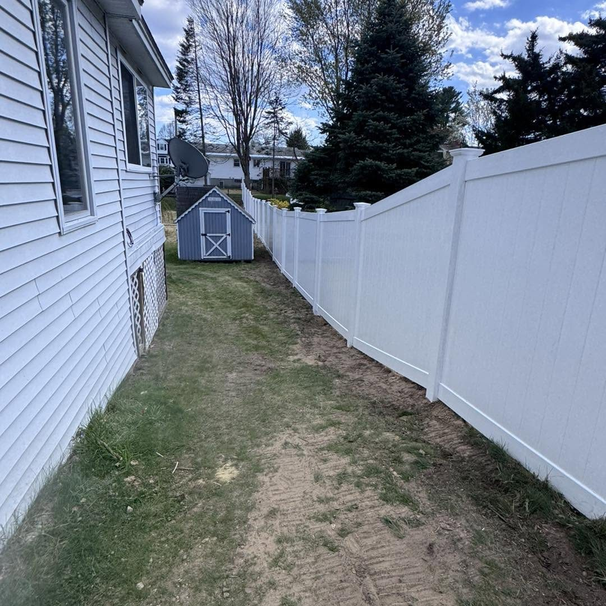
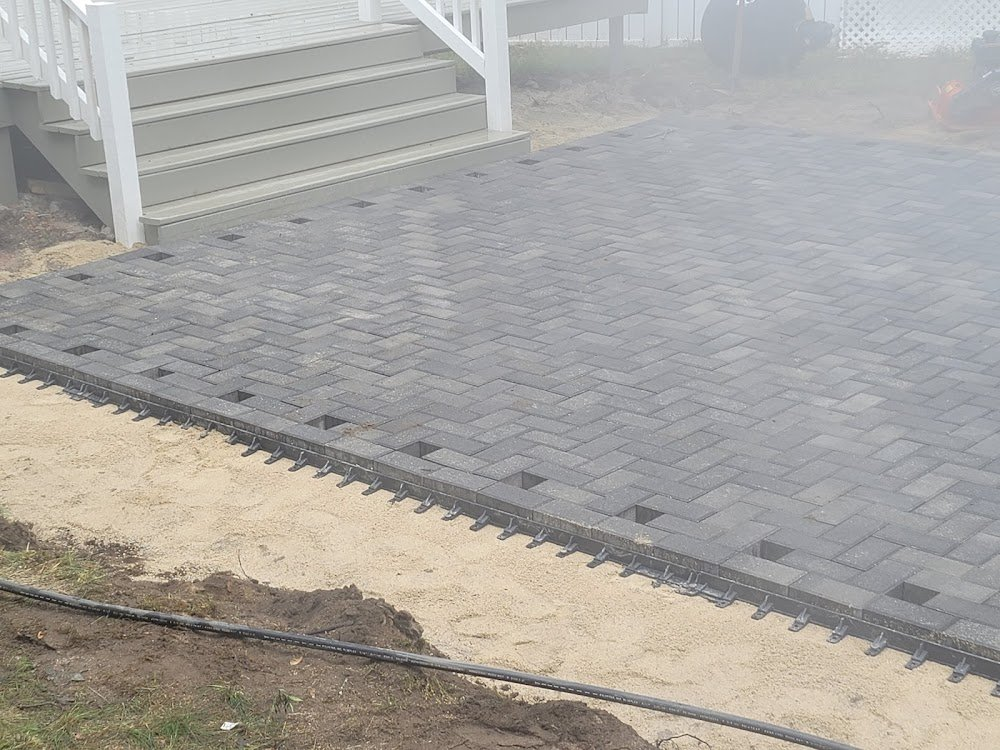
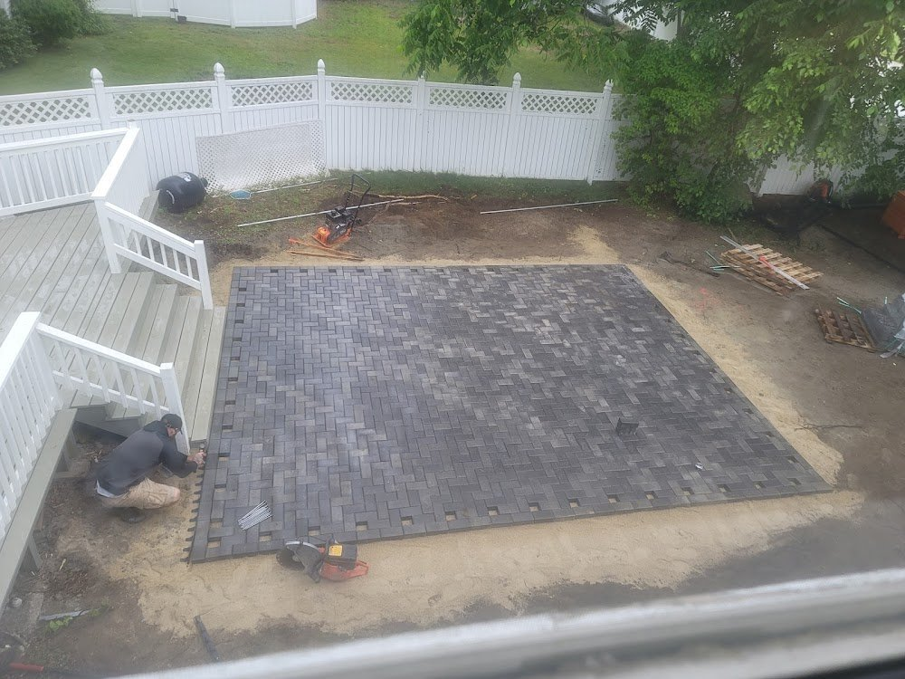
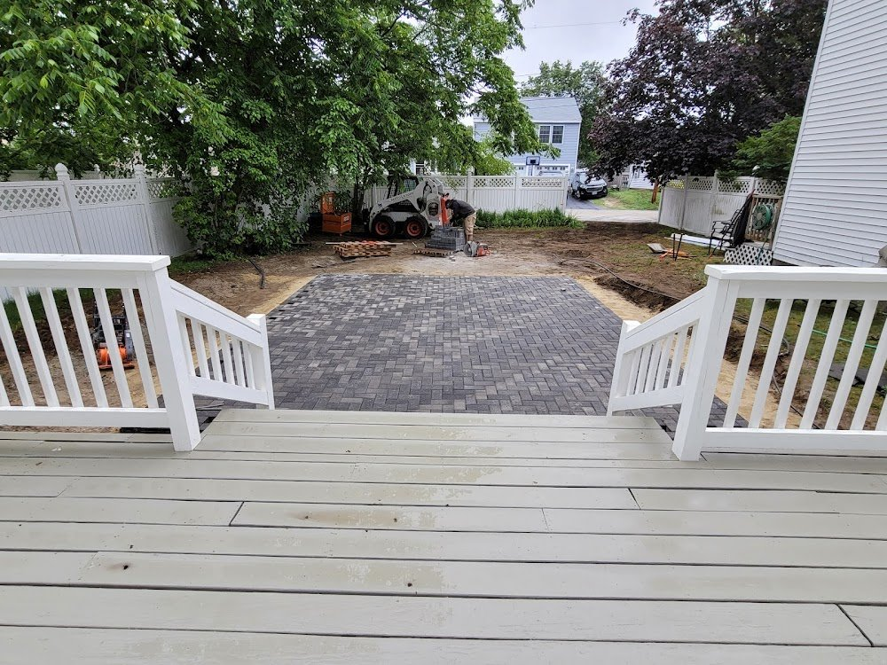
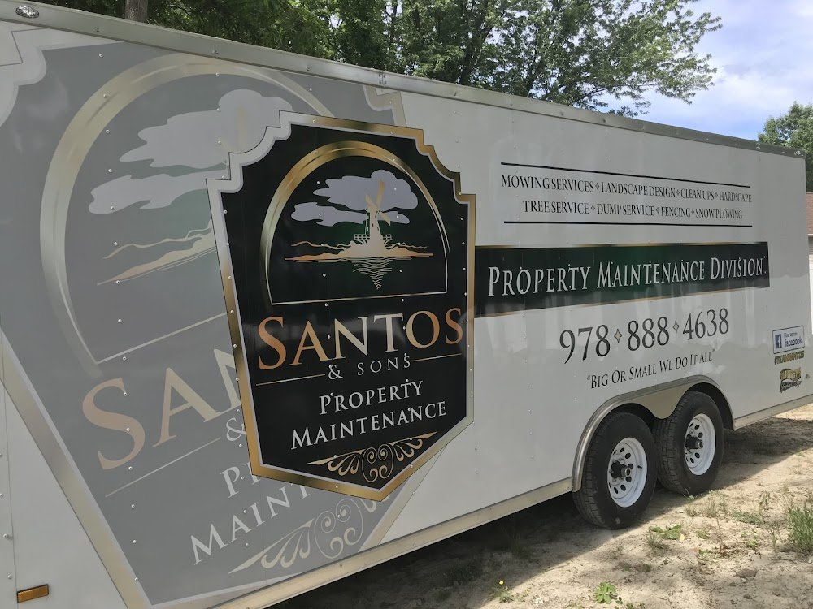
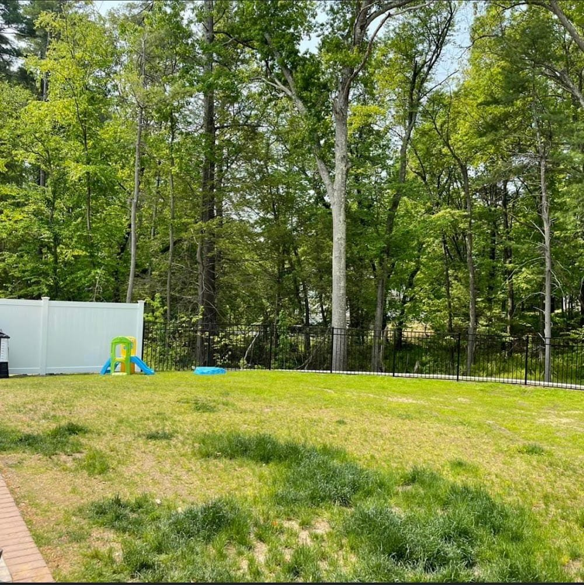

Gallery
Real jobs, real fences.
Every photo below is Santos & Sons work, pulled straight from our job sites around the Merrimack Valley. Click any photo to enlarge it.













Want to see more? We post new projects on our Facebook page all season long.